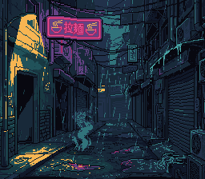
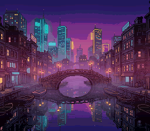

|
OpenSNES
Modern Open-Source SNES Development SDK
|
|
OpenSNES
Modern Open-Source SNES Development SDK
|
Backgrounds · the offset-per-tile modes (2/4/6).
Modes 2, 4 and 6 have a trick no other mode offers: offset-per-tile (OPT) lets every 8-pixel column of a layer scroll independently. That is how you get a flag rippling in the wind, a heat-haze shimmer, water distortion, or cheap per-column parallax — effects that would otherwise cost a scanline of HDMA or a full software redraw. It is niche, but when you want it, nothing else does it as cheaply.

The single idea: in Mode 2, BG3 stops being a drawable layer and becomes an offset table. For each column of BG1/BG2, the PPU reads a scroll offset straight out of BG3's tilemap:
This example puts the Rue basse under the rain on BG1 (the 4bpp picture of mode1) and writes a small sine into BG3's V-offset row, so each column shows the street a few lines higher or lower: the air shimmers like the heat over a steam vent. The phase advances each frame.

Mode 4 gives you an 8bpp (256-colour) BG1, a 2bpp BG2, and — like Mode 2 — BG3 as the offset table. The difference is the table: Mode 4 reads one row of it, so each column gets one word, either vertical or horizontal:
Here BG1 is the canal at night in 256 colours (the 8bpp picture of mode3, with eight mirrored rows added below it for the lines the wave lowers into view), and the same sine goes into the row as vertical words: the columns ripple. Press A and it goes in as horizontal words: the columns slide sideways, 0 to 24 pixels, 8 at a time. B again goes back to Mode 2.
The two pictures do not fit in VRAM together (28 KB of 4bpp tiles, 50 KB of 8bpp), so a switch reloads the scene in force blank (setScreenOff, the tiles, the map and the palette by DMA, setMode, setScreenOn): one dark frame. VRAM: the scene's tiles at $0000 (the canal's second part at $4000), BG1's map at $7000, the offset table at $7400.
Probe oracle: wave_phase advances every frame. The luna manifests dma_mode2_opt_table.toml (Mode 2: the two rows, word by word, at a given loop iteration) and backgrounds_mode2_mode4.toml (B, then A: the vertical words, then the horizontal ones) check it.
| Button | Action |
|---|---|
| B | Switch between Mode 2 and Mode 4 |
| A | In Mode 4: vertical words ⇄ horizontal words |
console, dma, background, input, math
| File | What | Made by |
|---|---|---|
| res/street.png | the rainy street, 16 colours, 4bpp (res/street.png.toml) | mode1's file, copied by devtools/art_assets/build.py |
| res/canal.png | the canal at night, 253 colours, 8bpp, 256x232 (res/canal.png.toml) | assets/neo-lumen/backgrounds/canal_256.png, its last eight rows mirrored below it (mode2_canal in build.py) |
CC0, like the rest of the Néo-Lumen assets (assets/neo-lumen/README.md).
← the rest of the family covers the everyday modes (mode1, mode0, mode3, mode5_hires); this rung is the specialist OPT modes. For per-scanline (rather than per-column) tricks, see the hdma family.